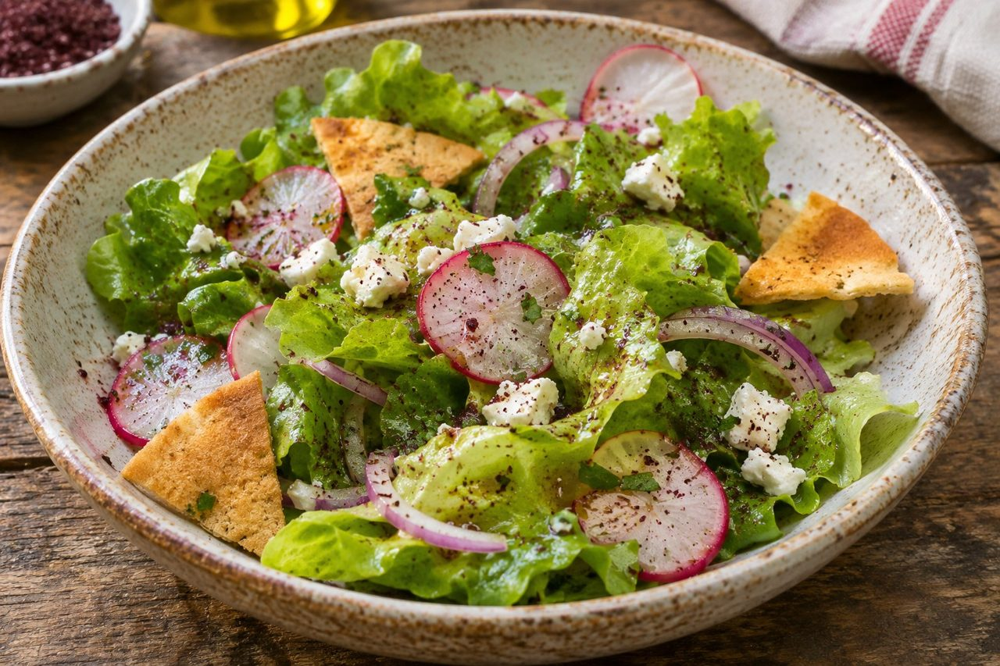

Middle Eastern-inspired · Side · Serves 2 · 15 min
Garden Lettuce & Radish Salad with Sumac Vinaigrette

Ingredient amounts are estimates when scaled. Original recipe and AnyList import remain unchanged.
Ingredients
- 3 cups garden leaf lettuce, washed, dried and chopped
- 3–4 radishes, thinly sliced
- ⅛ small red onion, very thinly sliced
- 1 tsp chopped parsley
- 3 tbsp crumbled feta
- ¼ cup pita chips, roughly broken
- 1½ tbsp extra-virgin olive oil
- 2¼ tsp red-wine vinegar
- ½ tsp sumac
- ¼ tsp honey
- ¼ tsp Dijon mustard
- ½ small garlic clove, finely grated
- ⅛ tsp salt, plus black pepper to taste
Instructions
- Soak red onion in cold water for 5–10 minutes to mellow its bite, then drain well. Wash and thoroughly dry lettuce; thinly slice radishes.
- Whisk olive oil, red-wine vinegar, sumac, honey, Dijon, garlic, salt and pepper until emulsified. Let stand while preparing the rest of dinner; whisk again before using.
- Combine lettuce, radishes, drained onion, parsley and feta. Add any optional vegetables from the notes. Toss with enough vinaigrette to lightly coat, starting with about two-thirds.
- Add pita chips just before serving to keep them crisp. Serve immediately.